1 Model definition
Referring to the models used in the articles Warton et al. (2015) and Albert & Siddhartha (1993), we define the following model :
\[ \mathrm{probit}(\theta_{ij}) =\alpha_i + \beta_{0j}+X_i.\beta_j+ W_i.\lambda_j \]
Link function probit: \(\mathrm{probit}: q \rightarrow \Phi^{-1}(q)\) where \(\Phi\) correspond to the repartition function of the reduced centred normal distribution.
Response variable: \(Y=(y_{ij})^{i=1,\ldots,nsite}_{j=1,\ldots,nsp}\) with:
\[y_{ij}=\begin{cases} 0 & \text{ if species $j$ is absent on the site $i$}\\ 1 & \text{ if species $j$ is present on the site $i$}. \end{cases}\]
- Latent variable \(z_{ij} = \alpha_i + \beta_{0j} + X_i.\beta_j + W_i.\lambda_j + \epsilon_{i,j}\), with \(\forall (i,j) \ \epsilon_{ij} \sim \mathcal{N}(0,1)\) and such that:
\[y_{ij}=\begin{cases} 1 & \text{if} \ z_{ij} > 0 \\ 0 & \text{otherwise.} \end{cases}\]
It can be easily shown that: \(y_{ij} \sim \mathcal{B}ernoulli(\theta_{ij})\).
Latent variables: \(W_i=(W_i^1,\ldots,W_i^q)\) where \(q\) is the number of latent variables considered, which has to be fixed by the user (by default \(q=2\)). We assume that \(W_i \sim \mathcal{N}(0,I_q)\) and we define the associated coefficients: \(\lambda_j=(\lambda_j^1,\ldots, \lambda_j^q)'\). We use a prior distribution \(\mathcal{N}(0,10)\) for all lambdas not concerned by constraints to \(0\) on upper diagonal and to strictly positive values on diagonal.
Explanatory variables: bioclimatic data about each site. \(X=(X_i)_{i=1,\ldots,nsite}\) with \(X_i=(x_i^1,\ldots,x_i^p)\in \mathbb{R}^p\) where \(p\) is the number of bioclimatic variables considered. The corresponding regression coefficients for each species \(j\) are noted : \(\beta_j=(\beta_j^1,\ldots,\beta_j^p)'\).
\(\beta_{0j}\) correspond to the intercept for species \(j\) which is assumed to be a fixed effect. We use a prior distribution \(\mathcal{N}(0,10)\) for all betas.
\(\alpha_i\) represents the random effect of site \(i\) such as \(\alpha_i \sim \mathcal{N}(0,V_{\alpha})\) and we assume that \(V_{\alpha} \sim \mathcal {IG}(\text{shape}=0.5, \text{rate}=0.005)\) as prior distribution by default.
2 Occurrence data-set

Figure 2.1: Litoria ewingii (Wilkinson et al. 2019).
This data-set is available in the jSDM-package R package. It can be loaded with the data() command. The frogs dataset is in “wide” format: each line is a site and the occurrence data (from Species_1 to Species_9) are in columns. A site is characterized by its x-y geographical coordinates, one discrete covariate and two other continuous covariates.
library(jSDM)
#> ##
#> ## jSDM R package
#> ## For joint species distribution models
#> ## https://ecology.ghislainv.fr/jSDM
#> ##
# frogs data
data(frogs, package="jSDM")
head(frogs)
#> Covariate_1 Covariate_2 Covariate_3 Species_1 Species_2 Species_3 Species_4
#> 1 3.870111 0 0.045334 1 0 0 0
#> 2 3.326950 1 0.115903 0 0 0 0
#> 3 2.856729 1 0.147034 0 0 0 0
#> 4 1.623249 1 0.124283 0 0 0 0
#> 5 4.629685 1 0.081655 0 0 0 0
#> 6 0.698970 1 0.107048 0 0 0 0
#> Species_5 Species_6 Species_7 Species_8 Species_9 y x
#> 1 0 0 0 0 0 66.41479 9.256424
#> 2 0 1 0 0 0 67.03841 9.025588
#> 3 0 1 0 0 0 67.03855 9.029416
#> 4 0 1 0 0 0 67.04200 9.029745
#> 5 0 1 0 0 0 67.04439 9.026514
#> 6 0 0 0 0 0 67.03894 9.023580We rearrange the data in two data-sets: a first one for the presence-absence observations for each species (columns) at each site (rows), and a second one for the site characteristics.
We also normalize the continuous explanatory variables to facilitate MCMC convergence.
3 Parameter inference
We use the jSDM_binomial_probit() function to fit the JSDM (increase the number of iterations to achieve convergence).
mod_frogs_jSDM_probit <- jSDM_binomial_probit(
# Chains
burnin=1000, mcmc=1000, thin=1,
# Response variable
presence_data = PA_frogs,
# Explanatory variables
site_formula = ~.,
site_data = Env_frogs,
# Model specification
n_latent=2, site_effect="random",
# Starting values
alpha_start=0, beta_start=0,
lambda_start=0, W_start=0,
V_alpha=1,
# Priors
shape=0.1, rate=0.1,
mu_beta=0, V_beta=1,
mu_lambda=0, V_lambda=1,
# Various
seed=1234, verbose=1)
#>
#> Running the Gibbs sampler. It may be long, please keep cool :)
#>
#> **********:10.0%
#> **********:20.0%
#> **********:30.0%
#> **********:40.0%
#> **********:50.0%
#> **********:60.0%
#> **********:70.0%
#> **********:80.0%
#> **********:90.0%
#> **********:100.0%4 Analysis of the results
np <- nrow(mod_frogs_jSDM_probit$model_spec$beta_start)
## beta_j of the first two species
par(mfrow=c(2,2))
for (j in 1:2) {
for (p in 1:np) {
coda::traceplot(coda::as.mcmc(mod_frogs_jSDM_probit$mcmc.sp[[j]][,p]))
coda::densplot(coda::as.mcmc(mod_frogs_jSDM_probit$mcmc.sp[[j]][,p]),
main = paste(colnames(mod_frogs_jSDM_probit$mcmc.sp[[j]])[p],
", species : ",j))
}
}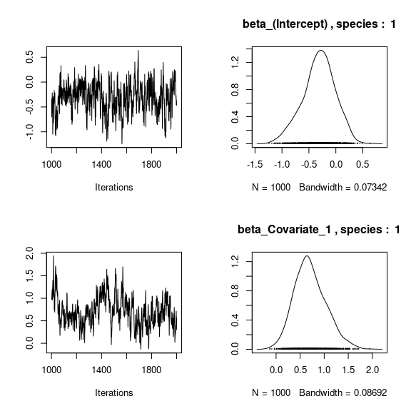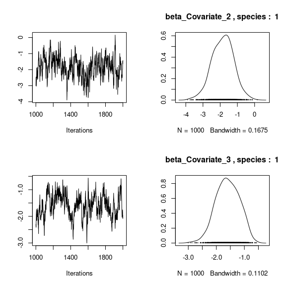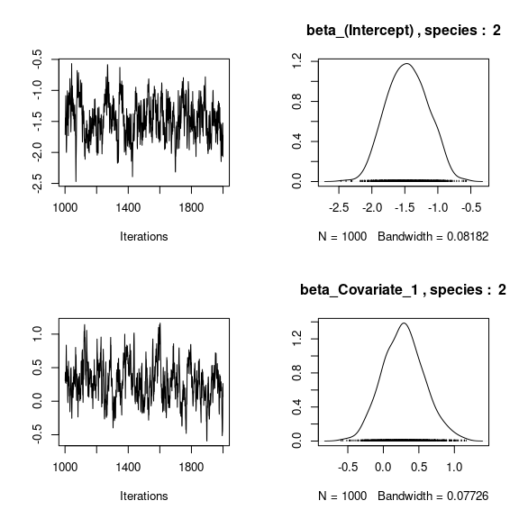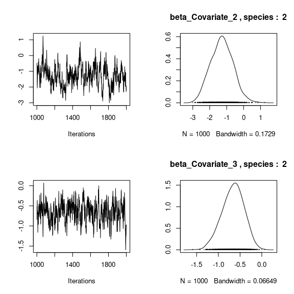
## lambda_j of the first two species
n_latent <- mod_frogs_jSDM_probit$model_spec$n_latent
par(mfrow=c(2,2))
for (j in 1:2) {
for (l in 1:n_latent) {
coda::traceplot(coda::as.mcmc(mod_frogs_jSDM_probit$mcmc.sp[[j]][,np+l]))
coda::densplot(coda::as.mcmc(mod_frogs_jSDM_probit$mcmc.sp[[j]][,np+l]),
main = paste(colnames(mod_frogs_jSDM_probit$mcmc.sp[[j]])
[np+l],", species : ",j))
}
}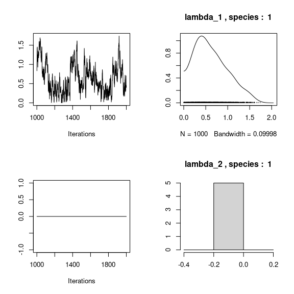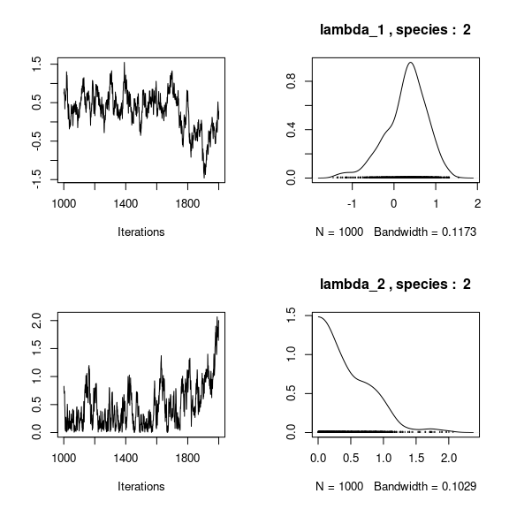
## Latent variables W_i for the first two sites
par(mfrow=c(2,2))
for (l in 1:n_latent) {
for (i in 1:2) {
coda::traceplot(mod_frogs_jSDM_probit$mcmc.latent[[paste0("lv_",l)]][,i],
main = paste0("Latent variable W_", l, ", site ", i))
coda::densplot(mod_frogs_jSDM_probit$mcmc.latent[[paste0("lv_",l)]][,i],
main = paste0("Latent variable W_", l, ", site ", i))
}
}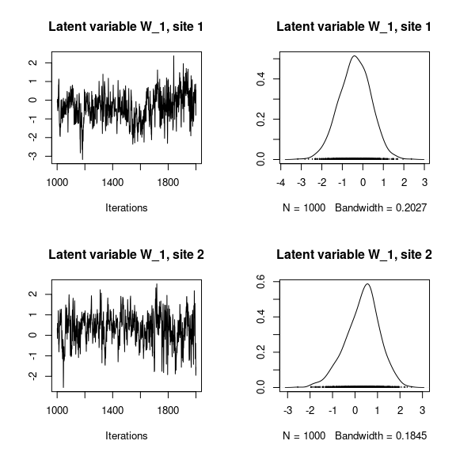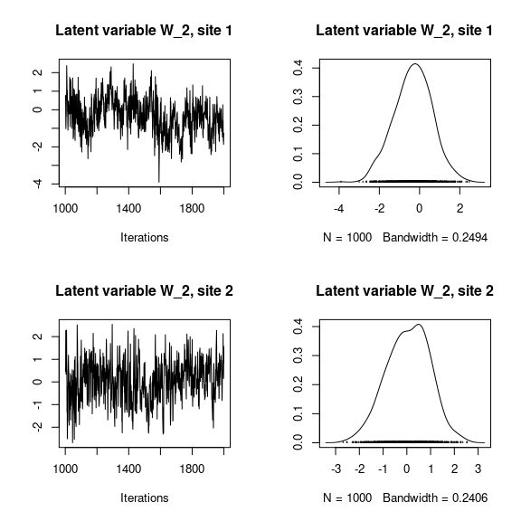
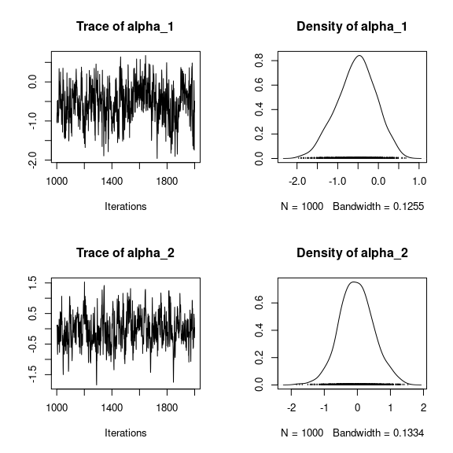
## V_alpha
par(mfrow=c(2,2))
coda::traceplot(mod_frogs_jSDM_probit$mcmc.V_alpha)
coda::densplot(mod_frogs_jSDM_probit$mcmc.V_alpha)
## Deviance
coda::traceplot(mod_frogs_jSDM_probit$mcmc.Deviance)
coda::densplot(mod_frogs_jSDM_probit$mcmc.Deviance)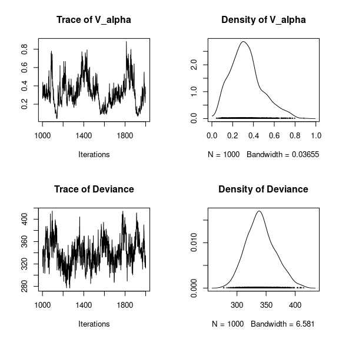
## probit_theta
par (mfrow=c(2,1))
hist(mod_frogs_jSDM_probit$probit_theta_latent,
main = "Predicted probit theta", xlab ="predicted probit theta")
hist(mod_frogs_jSDM_probit$theta_latent,
main = "Predicted theta", xlab ="predicted theta")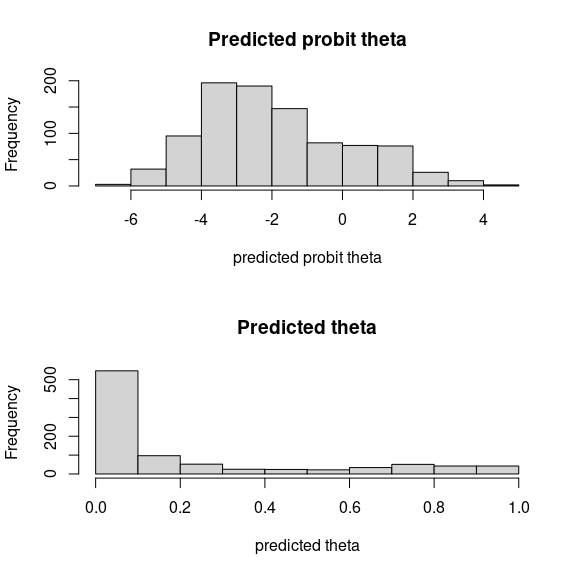
5 Matrice of correlations
After fitting the jSDM with latent variables, the full species residual correlation matrix \(R=(R_{ij})^{i=1,\ldots, nspecies}_{j=1,\ldots, nspecies}\) can be derived from the covariance in the latent variables such as : \[\Sigma_{ij} = \lambda_i .\lambda_j^T \], then we compute correlations from covariances : \[R_{i,j} = \frac{\Sigma_{ij}}{\sqrt{\Sigma _{ii}\Sigma _{jj}}}\].
We use the plot_residual_cor() function to compute and display the residual correlation matrix :
plot_residual_cor(mod_frogs_jSDM_probit)
6 Predictions
We use the predict.jSDM() S3 method on the mod_frogs_jSDM_probit object of class jSDM to compute the mean (or expectation) of the posterior distributions obtained and get the expected values of model’s parameters.
# Sites and species concerned by predictions :
## 50 sites among the 104
Id_sites <- sample.int(nrow(PA_frogs), 50)
## All species
Id_species <- colnames(PA_frogs)
# Simulate new observations of covariates on those sites
simdata <- matrix(nrow=50, ncol = ncol(mod_frogs_jSDM_probit$model_spec$site_data))
colnames(simdata) <- colnames(mod_frogs_jSDM_probit$model_spec$site_data)
rownames(simdata) <- Id_sites
simdata <- as.data.frame(simdata)
simdata$Covariate_1 <- rnorm(50)
simdata$Covariate_3 <- rnorm(50)
simdata$Covariate_2 <- rbinom(50,1,0.5)
# Predictions
theta_pred <- predict(mod_frogs_jSDM_probit, newdata=simdata, Id_species=Id_species,
Id_sites=Id_sites, type="mean")
hist(theta_pred, main="Predicted theta with simulated data", xlab="predicted theta")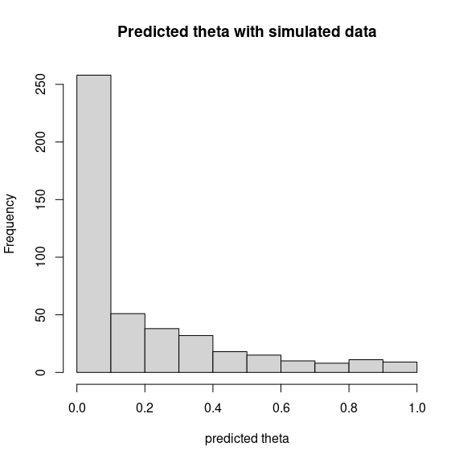